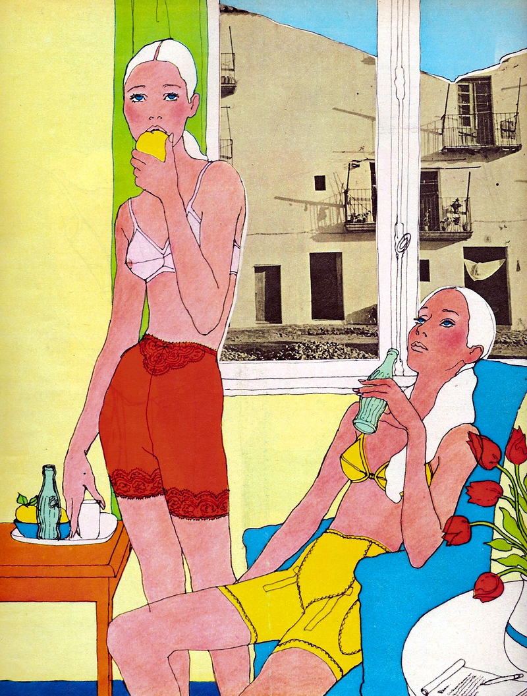

1230 5th Ave,
New York, NY 10029
06.14.16 — 11.26.16
Antonio Lopez: Future Funk Fashion
El Museo del Barrio is pleased
to present an exhibition on the work
of the fashion illustrator Antonio Lopez (1943-1987).

This exhibition will explore various aspects
of the work of this important artist,
developing thematic sections that focus
on high fashion illustration,
his relationship to particular models,
his shoe and jewelry designs,
and images of people he came to know
and love from the streets of New York City.
Ongoing
Sarah Zapata: Siempre X